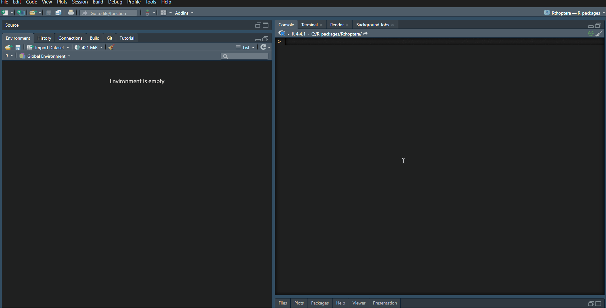

Summarizing Data with Rthoptera
NatureWaves
2024-10-02
Source:vignettes/Summarize.Rmd
Summarize.RmdGetting summary data for specific trains across motifs
When you use the call_stats functions to extract
temporal and spectral statistics, the summary output does not include
summaries by individual “train ids” because the number of train per
motif is variable between species. However, you can easily summarize
these with little code:
For this example, we will work with the gryllus object
from the RthopteraSounds package. After loading the data,
we will run the call_stats_hq function which is optimized
for tonal calls, storing the output of the function in the local
environment:
# Load packages and data
library(Rthoptera)
library(RthopteraSounds)
data(gryllus)
# Store the results in the R environment
results <- call_stats_hq(gryllus)Next, we will group the train data by “train.id”, and summarize it
with the reframe() function from the dplyr
package, calculating its mean:
results$train_data |>
group_by(train.id) |> # group the trains by their identity within a motif
reframe(mean(peak.freq)) # get the mean per "train.id"

Fig.3. How to use the “bandpass_filter”
app.